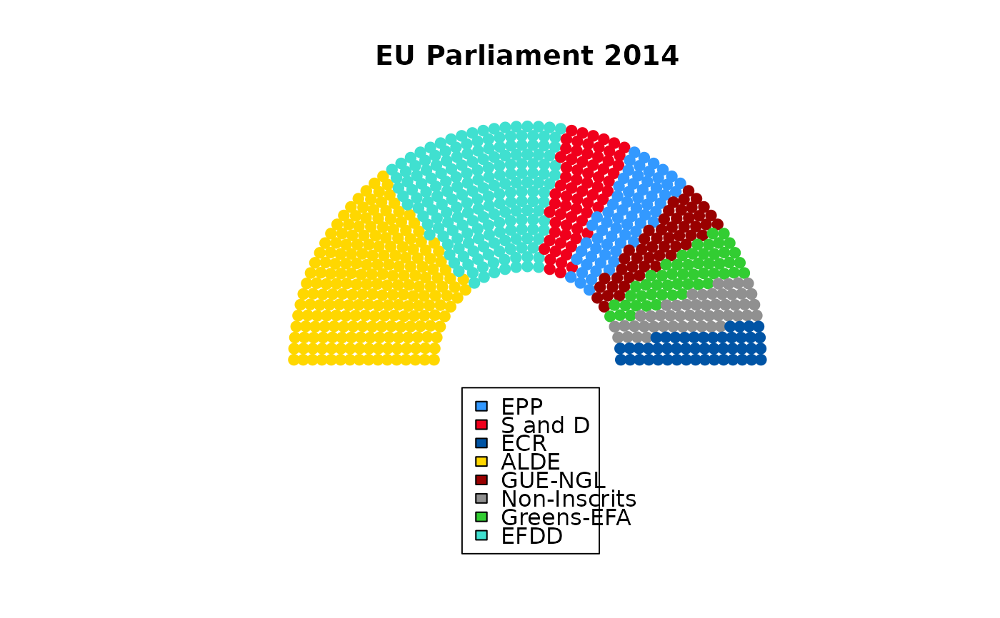

Assign party members to seats
election.RdCreate a layout for an election result in an assembly
Arguments
- seats
A data frame of x and y positions, row numbers and angles (usually the output from the seats function).
- result
A data frame with party names and seat counts.
- formula
A formula with the party name column on the left and the count column on the right. Think of the twiddle symbol as "got".
- colours
A vector of colours. If missing a random rainbow is used. This may cause Green parties to show as red.
Value
A data frame including:
- x
The x positions of the seats to be plotted on semi-circular arcs.
- y
The y positions of the seats to be plotted on semi-circular arcs.
- r
The row numbers for each seat.
- theta
The angle of each seat, going from pi to zero radians.
- party
The labels for the party holding each seat.
- colour
The colour that has been assigned to the party.
Examples
# The EU parliament has 751 seats, and Wikipedia currently shows this
eu = structure(list(colour = c("#3399FF", "#F0001C", "#0054A5", "#FFD700",
"#990000", "#909090", "#32CD32", "#40E0D0"), party = c("EPP",
"S and D", "ECR", "ALDE", "GUE-NGL", "Non-Inscrits", "Greens-EFA",
"EFDD"), members = c(220L, 191L, 70L, 68L, 52L, 52L, 50L, 48L
)), .Names = c("colour", "party", "members"), row.names = c(NA,
-8L), class = "data.frame")
strasbourg = seats(751, 16)
eugov = election(strasbourg, eu, party~members, colours=eu$colour)
oldmar<-par(mar=c(2,4,4,2))
plot(eugov$x, eugov$y, col=eugov$colour, asp=1, pch=19, ylim=c(-2,2.5),
xlab="", ylab="", main="EU Parliament 2014", axes=FALSE)
legend(-0.7,-0.3,eu$party,fill=eu$colour)

par(oldmar)
# or using ggplot2
if (FALSE) {
require(ggplot2)
blank = theme(axis.line=element_blank(),
axis.text.x=element_blank(),
axis.text.y=element_blank(),
axis.ticks=element_blank(),
axis.title.x=element_blank(),
axis.title.y=element_blank(),
panel.background=element_blank(),
panel.border=element_blank(),
panel.grid.major=element_blank(),
panel.grid.minor=element_blank(),
plot.background=element_blank())
ggplot(eugov, aes(x=x,y=y,col=party)) + geom_point() + coord_fixed() + blank
}